A comprehensive, online, updateable tree of life
Karen Cranston / @kcranstn / slides on GitHub
Outline
- How did this happen?
- Building the tree
- Live Demo!
- What's next
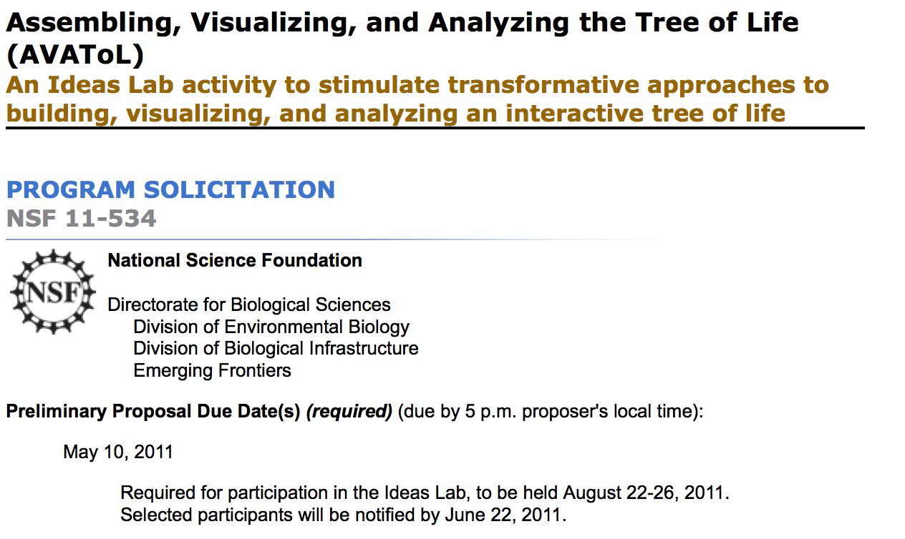
Why don't we have the tree of life?
What does 'we have the tree of life' mean?
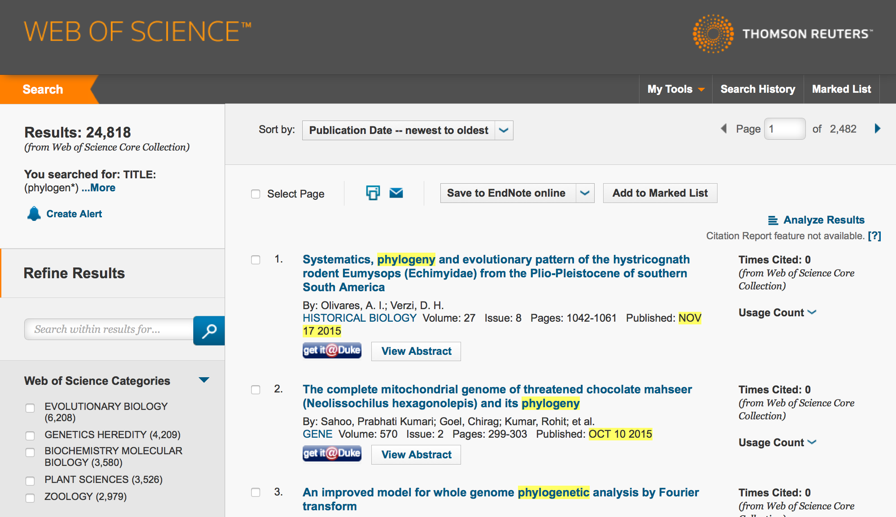


Summarize existing phylogenetic knowledge into a tree of life that is 1. complete; 2. online; 3. easily updateable.
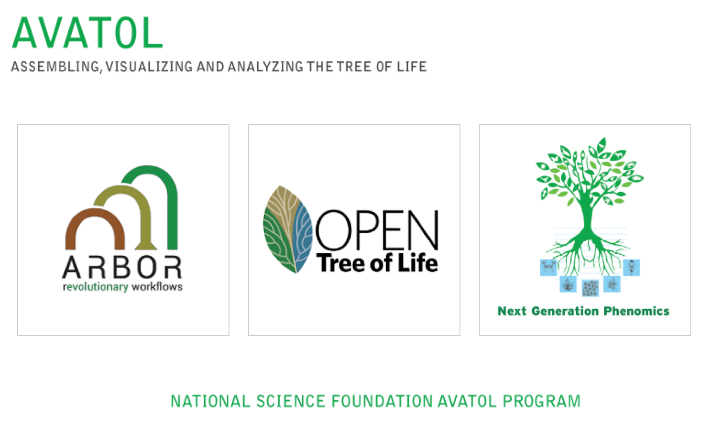
Building the Open Tree of Life
Two kinds of inputs
- Phylogenies
- Taxonomies
I. Phylogenies
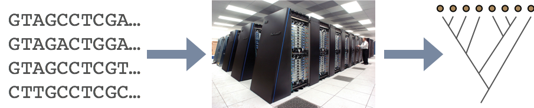
- computationally derived
- highly resolved
- limited taxon coverage
I. Taxonomies
manually curated
poorly resolved
much more taxonomically complete
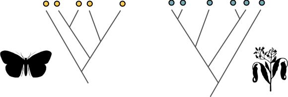
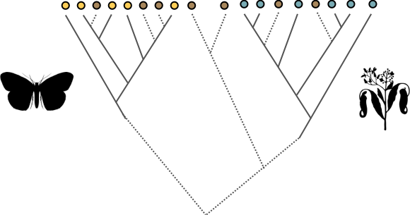

Graph Databases (neo4j)

Phylogeny = nodes and edges
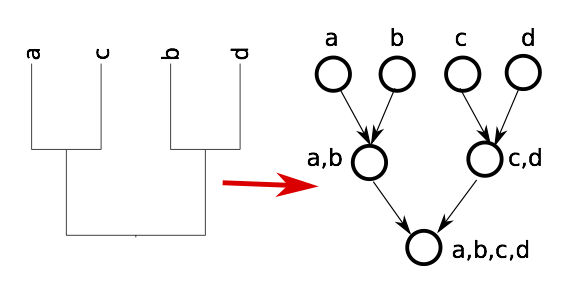
Input conficting tree
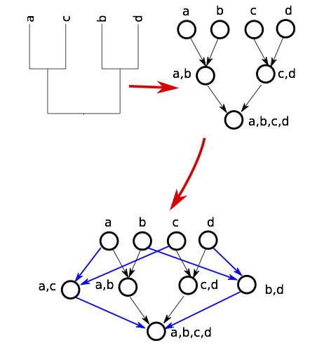
Extract a single tree from the graph
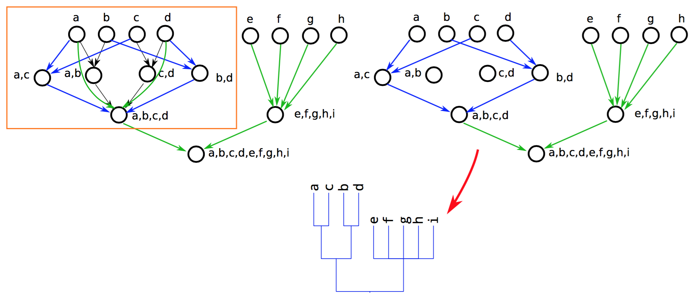
Open Tree of Life v 3.0
- 2.23 million tips
- 7 input taxonomies
- 483 input trees
- 46,000 tips from phylogeny
- Database of 7500 trees from 3300 studies
Tip = lineage with > 500 OTUs
Red = Many sequences in GenBank; Blue = Few sequences
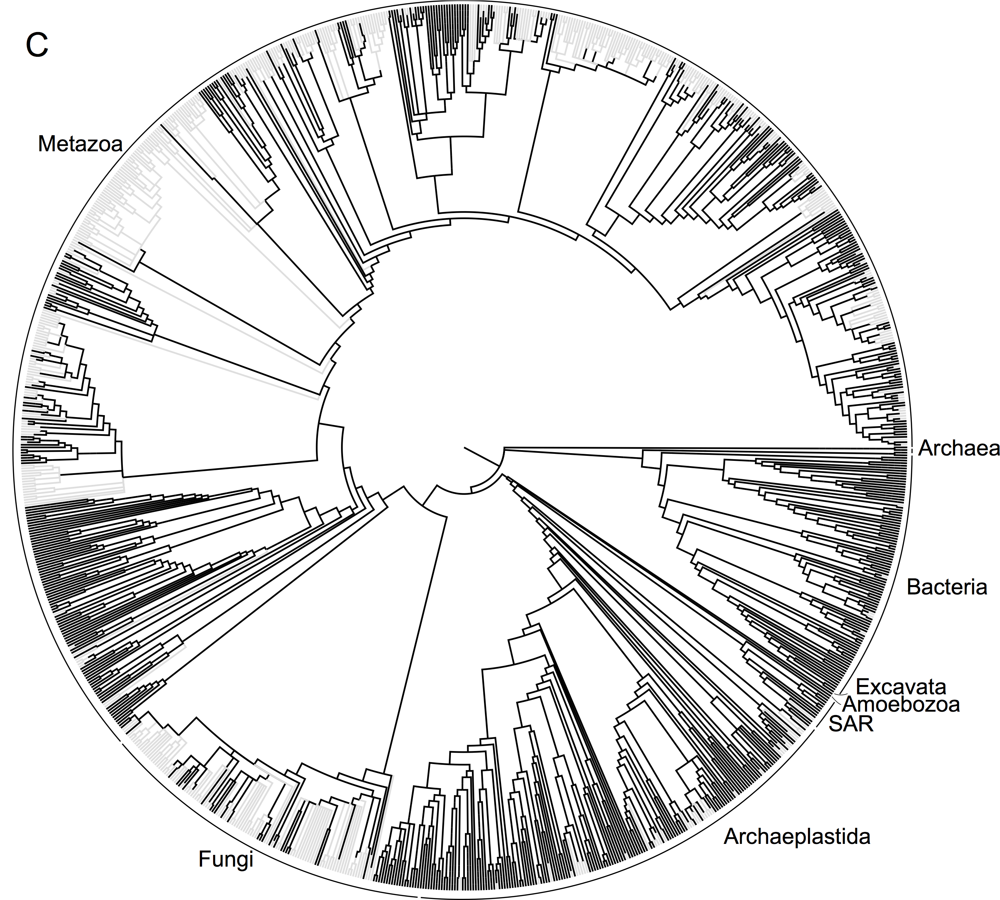
Tip = lineage with > 500 OTUs
Black = at least one tip from phylogeny
Improving the tree
Missing phylogenies
Taxa without alignable data
Incomplete / out of date taxonomies
Unsampled taxa

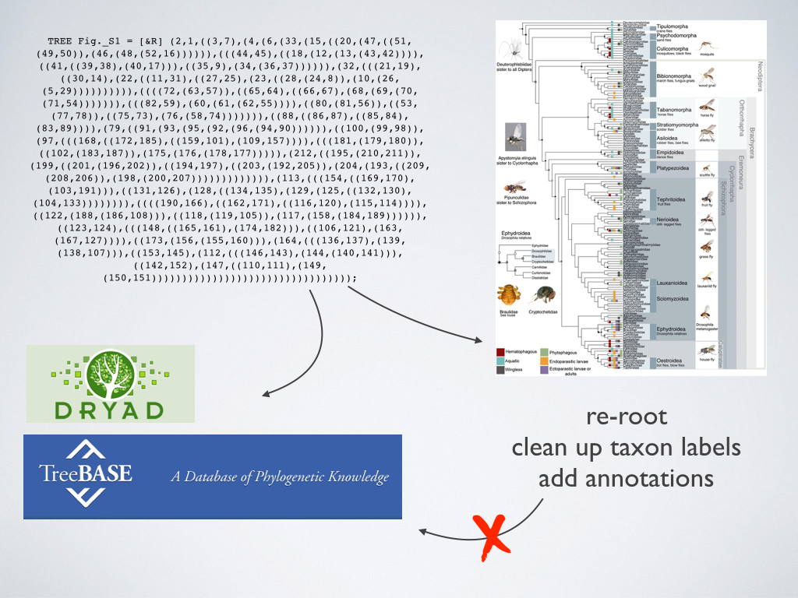


Generating alignable data
Improving taxonomies
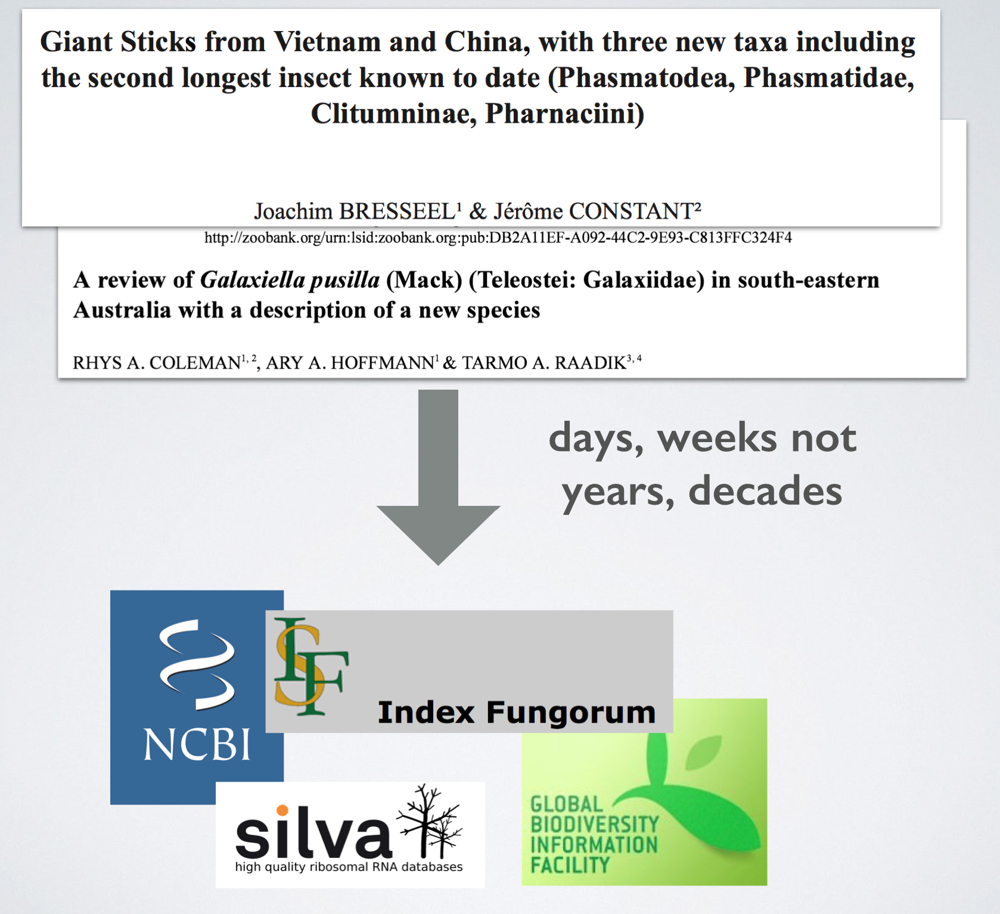
Databases describing OTUs in microbial trees
(aka Tell Me More about “YNP Site_2 (81%) 2024889491”)
What services do you want for tree of life data?
Collaborators

Funding from NSF AVAToL